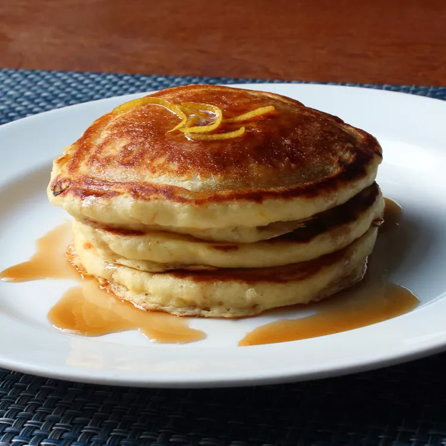

Pancakes
Pancakes

If these lemon ricotta pancakes were any lighter, they would
float off the plate! They are easy to make and delicious
served with a pat of butter, lemon zest, and a drizzle of
maple syrup.
- ¾ cup cold water or milk
- ½ teaspoon baking soda
- ½ cup ricotta cheese
- 1 large egg
- 1 tablespoon grated lemon zest (just the yellow part of the skin)
- 1 tablespoon vegetable oil
- 1 tablespoon white sugar
- ⅛ teaspoon vanilla extract
- 1 cup self-rising flour
- 2 tablespoons self-rising flour
- 2 tablespoons melted butter
- 1 tablespoon lemon juice
Step 1
-
Whisk cold water and baking soda in a mixing bowl.
Add ricotta cheese, egg, lemon zest, vegetable oil,
sugar, and vanilla; whisk until smooth, breaking up
lumps of cheese as you mix.
Step 2
-
Whisk in 1 cup plus 2 tablespoons self-rising flour,
melted butter, and lemon juice until most of flour
disappears into batter. Let batter sit at room
temperature for 15 minutes.
Step 3
-
Heat a lightly oiled griddle over medium-high heat.
Step 4
-
Drop batter by large spoonfuls onto the hot griddle
and cook until bubbles form and the edges are dry, 2
to 3 minutes. Flip and cook until browned on the other
side, 2 to 3 minutes. Repeat with remaining batter.